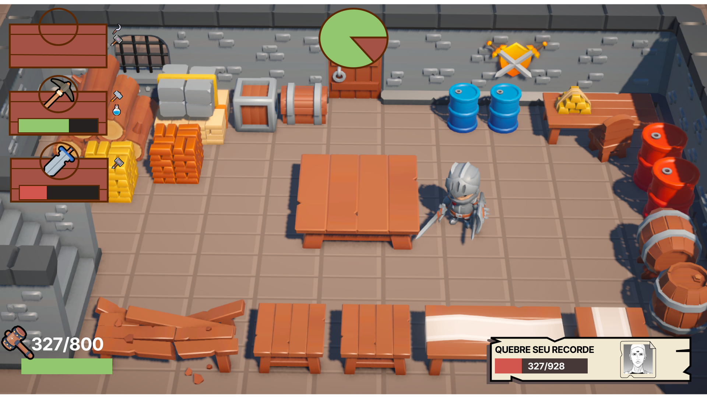
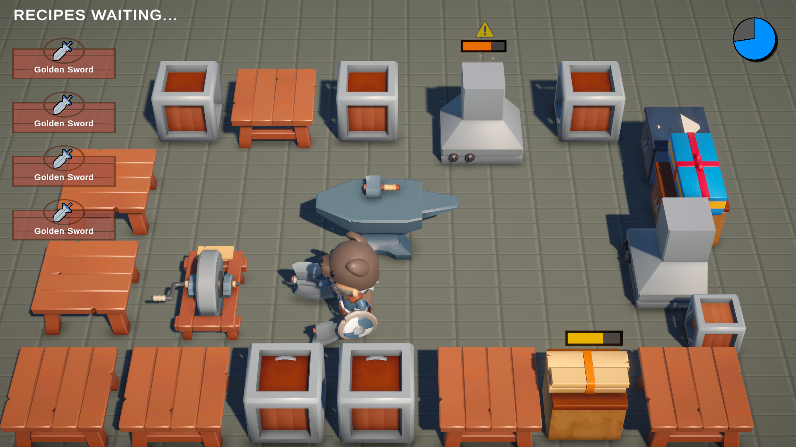
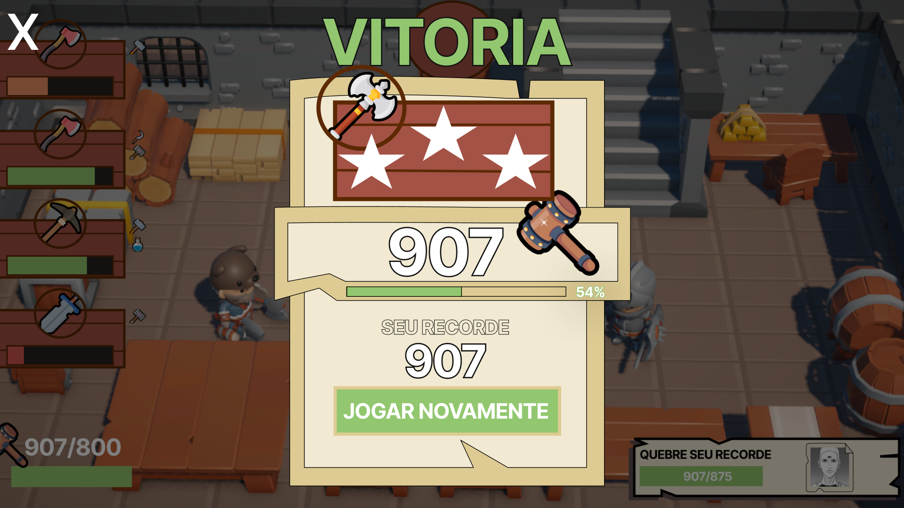

FORGE QUEST
É um simulador de gerenciamento de recursos cooperativo (co-op online) em ritmo acelerado, focado em gerenciamento de tempo, priorização de tarefas e comunicação em equipe. A proposta transpõe a urgência e o caos mecânico de simuladores de cozinha para uma linha de montagem de forja medieval, substituindo ingredientes por minérios e receitas por diagramas de armamentos.

Mecânicas do Jogo
O core loop do jogo foi desenhado para testar a coordenação e a velocidade de resposta. Clique nos tópicos abaixo para expandir os detalhes mecânicos:
Fundição de Minérios
▼
Os jogadores precisam coletar matéria-prima bruta e abastecer os fornos. Cada tipo de minério exige um tempo exato de aquecimento. Retirar antes resulta em material fraco; passar do tempo estraga o produto e gera riscos de acidente.
Moldagem na Bigorna
▼
Após o aquecimento, o metal deve ser moldado através de um sistema de mini-game baseado em tempo de reação (Quick Time Events). Golpes precisos garantem bônus de qualidade nas armas entregues ao rei.
Resfriamento e Têmpera
▼
A última etapa exige que as peças quentes passem pelos baldes de água. O processo deve ser imediato para não atrasar a linha de produção, demandando sincronia perfeita no revezamento dos itens entre os jogadores.
Sistema de Hazards
▼
O principal elemento caótico do ambiente. Estações de trabalho sobrecarregadas ou minérios esquecidos no calor iniciam focos de fogo de forma procedural. Os jogadores devem parar suas tarefas normais para conter o incêndio antes que a oficina quebre.
Minhas Funções
Neste projeto, atuei de forma híbrida conectando a visão criativa com a execução lógica do gameplay loop.
💻 PROGRAMAÇÃO (Gameplay & Sistemas)
▼
Responsável pelo desenvolvimento da lógica dos estados de temperatura dos materiais, codificação do algoritmo procedural que distribui as ordens de armamentos com base no tempo de partida e calibração fina dos inputs na bigorna para garantir um feedback rápido e preciso ao jogador.
📐 GAME DESIGN (Balanceamento & Core Loop)
▼
Estruturação do fluxo de produção de itens para criar gargalos intencionais, gerenciamento de ritmo (pacing) através dos sistemas de hazards/incêndios e mapeamento da curva de dificuldade de cada partida para incentivar a cooperação extrema entre os jogadores.


Acesse o Projeto
Você pode testar a build atual diretamente pelo navegador ou ler o planejamento completo de escopo, balanceamento e regras de design no documento de Game Design.
Jogar no Itch.io ↗ Ler o GDD do Jogo 📄Gameplay em Ação
Assista abaixo a uma demonstração em vídeo exibindo a sincronia da equipe, o gerenciamento do tempo de queima dos fornos e o caos gerado pelos hazards quando as ordens acumulam.